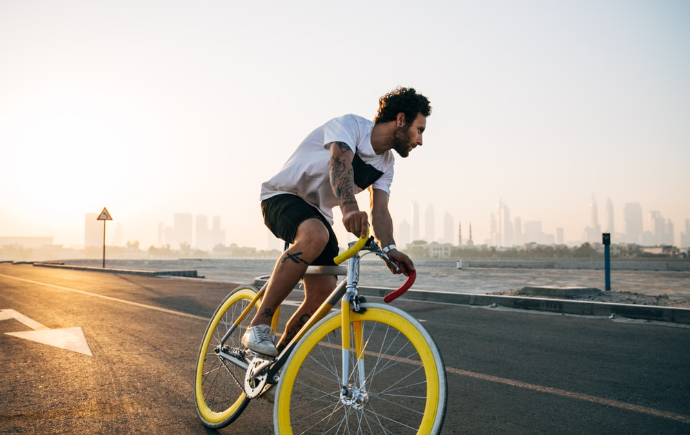
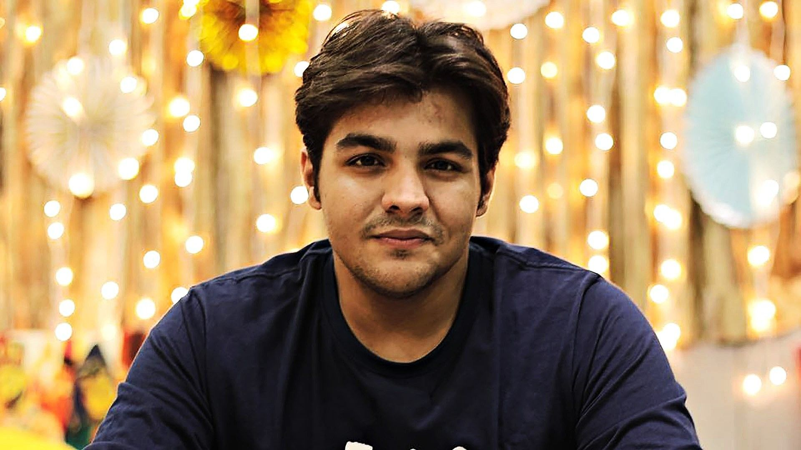
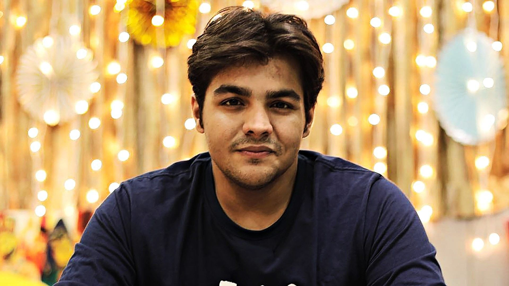

My favourite hobby is cycling. It is the easiest way to travel when we have to go to the near by places in our locality. Riding bicycle is also a good exercise. Cycling improves strength, balance and coordination. It may also help to prevent falls and fractures. Riding a bike is an ideal form of exercise if you have osteoarthritis, because it is a low-impact exercise that places little stress on joints.
My favourite cycles are- Road bikes: Roads. Mountain bikes: Off road. Hybrid/commuter bikes: A bit of everything. Cyclocross bikes: A bit of everything, but with a road bike feel. Folding bikes: Commuting, leisure or touring for the short-on-space. Electric bikes: An electric-assisted bit of everything. Touring bikes: designed for carrying loads over longer distances while remaining comfortable for the rider.
I am student in Kendriya Vidyalaya School. Ia m taking classes of coding from white hat junior.I am also good in solving the sums of mathematics.
 
